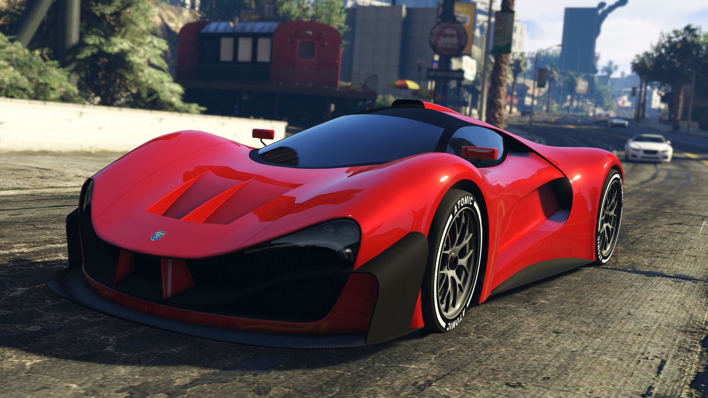
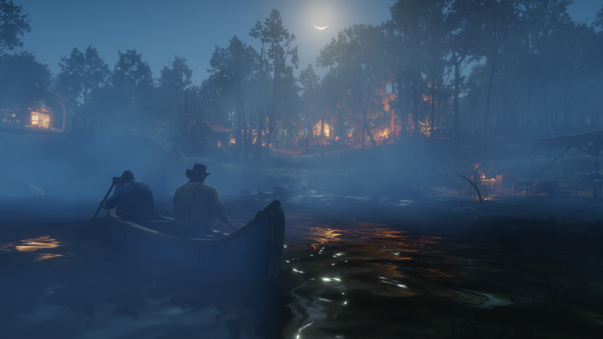
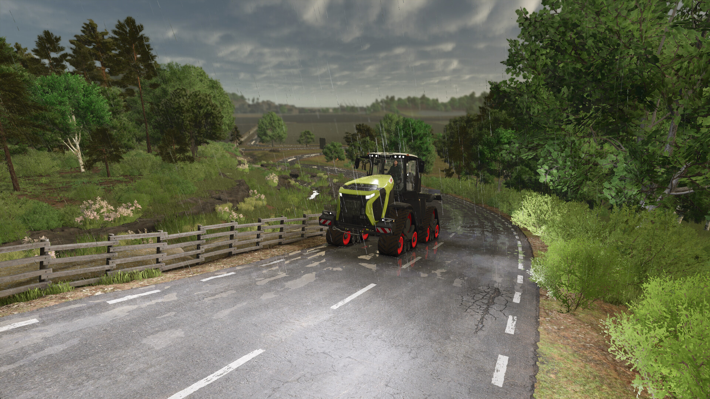
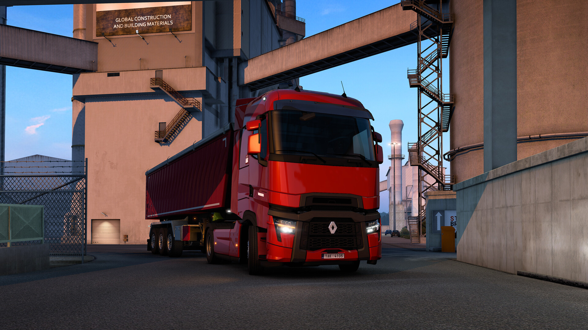
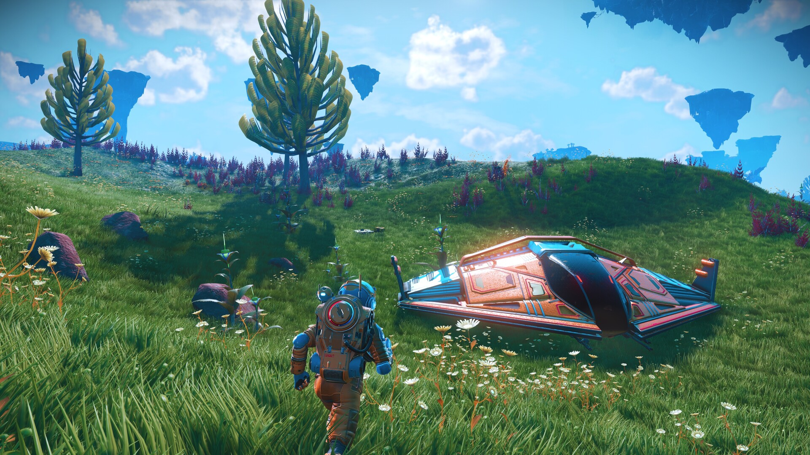
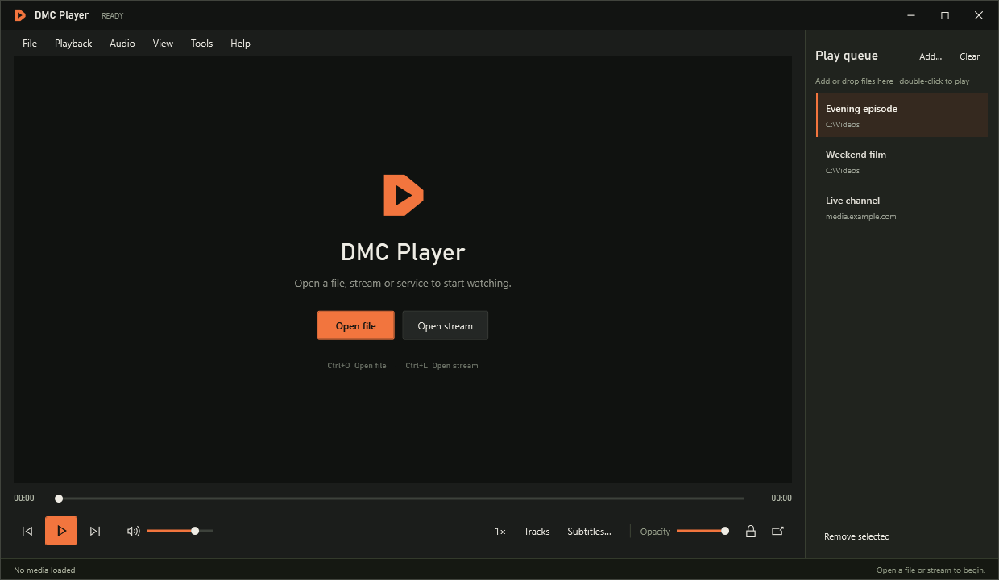

THE PLAYER
Built to fit
around your game.
A normal media player when you need one. A small, quiet window when you want to get on with playing.
MINI PLAYER
Your corner
of the screen.
Press Ctrl + Alt + O to go small. Drag the picture to move it and stretch an edge or corner to resize it. Double-click to return to the full player.





Always in view
Keep the window on top while your game runs in borderless windowed mode.
Controls on hover
Move over the unlocked picture for playback, skip and volume controls. Move away and they collapse.
Lock it in place
Press Ctrl + Alt + L to pass clicks through to the game. Press again to unlock.
FILES & DIRECT STREAMS
Bring something
worth watching.
Drop a file into the player, use the File menu or paste a direct media link. The VLC engine handles a wide range of video and audio formats.
Play, pause, seek, adjust volume, choose available tracks and subtitles, or go fullscreen with F11.

AN OPTIONAL QUEUE
Line things up.
Only if you want to.
Opening a video plays it on its own. Use File → Add to queue when you want a list.
Your manually chosen queue can stay for next time. Removing or clearing its entries leaves the current video playing.

WEB PLAYERS
Your services.
Inside the window.
Open YouTube from the File menu or paste a YouTube link. For BBC iPlayer, ITVX, Netflix, Prime Video and other providers, choose File → Streaming services and sign in on the provider's own page.
These websites use their own players. Account, subscription, region and browser/DRM requirements apply; a listed service isn't a guarantee that every protected programme plays in the embedded view.
Read the playback FAQLESS REACHING FOR THE MOUSE
Keep the useful keys close.
- Ctrl + Alt + O
- Mini / restore
- Ctrl + Alt + L
- Click-through lock
- Ctrl + Alt + Space
- Play / pause
- F11
- Fullscreen
- Ctrl + O
- Open file
- Ctrl + L
- Open stream
Exclusive fullscreen games can cover desktop overlays. Use borderless windowed mode for the mini player.